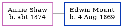

Annie Mount (née Shaw) c1874 -
[ Home ] | [ Calendar ] | [ Surnames Index ] | [ Family History ]Annie Shaw, the wife of Edwin Henry Mount (the great-great-uncle of Nigel Horne), was born c. 1874. She married Edwin (a boatman) at Christ Church, Herne Bay, Kent, England on Jun 23, 1904.
Media
Canterbury Marriages Transcription - GBPRS-CANT-M-97074273-1
Kent, Canterbury Archdeaconry marriages 1538-1928 - GBPRS/CANT/M/97074273/2
England & Wales marriages 1837-2008 - BMD/M/1904/2/AZ/000344/167
Kent, Canterbury Archdeaconry banns 1754-1928 - GBPRS/CANT/M/94100379/2
Family Tree
Generated by Ged2Site. Last updated on Jul 20, 2025